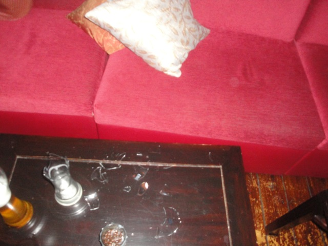

TPR's Mega Europe Trip
Rome Rome Credit Whoring Rainbow Magicland Fiabilandia Mirabilandia
Movieland Studios Gardaland Walygator Parc Holiday Park Europa Park
Fort Fun Heide Park Schlossbeck
Movie Park Germany
Phantasialand
Parc Asterix Disneyland Paris
 All right. We have arrived at Hotel Ling Bao, which is Phantasialand's 5 Star On Site Hotel.
All right. We have arrived at Hotel Ling Bao, which is Phantasialand's 5 Star On Site Hotel.
So much crazy stuff is gonna happen here. =)
Dude, this hotel is so f*cking awesome. I mean, just look at this view!!!!
On Beer #2. So far, this is going pretty well.
"I trust that you are all responsible adults who can handle this beer."

Ok. Story Time, A lot of crazy stuff happened at the Dragon Bar, much of it I forgot, but this I remember. We broke 4 glasses within 30 minutes. First, Dan dropped his camera on a glass and broke it (luckily his camera still worked). Then Kyle finished his beer, did some arm motion and knocked his glass on the floor and broke it. I don't even remember a 3rd glass breaking. And then it was my turn to break the final glass. Someone started a pillow fight in the bar and I was trying to hit Colin, I somehow missed. The pillow flew past Colin, and landed on the table next door and landed straight onto another glass, breaking the 4th one (as shown in the picture). Oh, how I wish I got that on video!!!! And I had my video camera with me!!! Damn myself for being too drunk to realize a good time to start shooting video. At this point, the bartender kicked us out since we broke 4 glasses in 30 minutes. I decided to go to bed anyways, since it was 3:15 AM and I had to wake up at 7:00. But from what I heard, everyone else stayed for another half hour and weren't shooed out or anything. But if anything, the biggest mystery was how I was able to perfectly wake up at 7:00 AM with no trouble. How with only 3.5 hours of sleep and 4.5 beers, I managed to not be tired and hungover. I am mystified.
Our morning started out with ERT on the parks new for 2012 Dark Ride. Maus de Chocolate.
It used the same technology they used for Toy Story Mania. And hey, its an awesome dark ride with an awesome theme.
Yeah. My score sucked as its much harder to score than on Toy Story Mania, but its still just as good. The theme is great, kind of reminds me of Ratatouille, and the entire time, it smells like a bakery.
ERT continues on as now we have Black Mamba ERT!!!!
 Black Mamba was a very intersting B&M Invert.
Black Mamba was a very intersting B&M Invert.
It was a sh*tload of fun, and the theming was incredible. But it felt too reliant on the theming. If you took it and plopped it in a parking lot like Scream, it'd be pretty lame. But hey, the theming makes it kick ass. And if I this is truely a problem for me, then I'd be screwed since everything at all the Disney Parks are like this.
 And now to top off ERT, we are now heading to one of the best spinning coasters in the world.
And now to top off ERT, we are now heading to one of the best spinning coasters in the world.
This thing seriously kicks ass!
 There are so many cool things this ride does that I'm not gonna give away. All I'll say is that some pretty funky sh*ts gonna go down in that darkness.
There are so many cool things this ride does that I'm not gonna give away. All I'll say is that some pretty funky sh*ts gonna go down in that darkness.
And on top of the special effects, it spins really well!!! =)
 Thank you Phantasialand for the great ERT sessions.
Thank you Phantasialand for the great ERT sessions.
 Now if you thought Winjas was great, you have to check out the awesomeness of Temple of the Night Hawk.
Now if you thought Winjas was great, you have to check out the awesomeness of Temple of the Night Hawk.
 There's really not much to say about this ride other than its pitch dark, doesn't do much, is a credit, and lasts for like 10 minutes.
There's really not much to say about this ride other than its pitch dark, doesn't do much, is a credit, and lasts for like 10 minutes.
 Dammit!!! Stop morphing into Epcot!!!! And stop painting Spaceship Earth!!!
Dammit!!! Stop morphing into Epcot!!!! And stop painting Spaceship Earth!!!
What the hell is that thing?
Time for us to get the final credit needed here, The Michael Jackson Thrill Ride.
 Hey, its actually a really good mine train. I'd even say its the best Non-Thunder Mtn or Thunderation mine train ever built.
Hey, its actually a really good mine train. I'd even say its the best Non-Thunder Mtn or Thunderation mine train ever built.
 "HEY EVERYONE!!!! MICHAEL JACKSON IS DEAD!!!!!!"
"HEY EVERYONE!!!! MICHAEL JACKSON IS DEAD!!!!!!"
 This thing was just flat out insane. By far the best, craziest, and wettest rapids ride I've ever ridden. Definetly one of the best water rides out there.
This thing was just flat out insane. By far the best, craziest, and wettest rapids ride I've ever ridden. Definetly one of the best water rides out there.
Yeah. This used to be where their log flume was.
 And this is what'll be replacing it for 2013.
And this is what'll be replacing it for 2013.
 Definetly one of the crazier drop towers out there. You have to ride it to figure out the secrets of this ride (Or be a lameass and google it and spoil it for yourself you loser).
Definetly one of the crazier drop towers out there. You have to ride it to figure out the secrets of this ride (Or be a lameass and google it and spoil it for yourself you loser).
Hey, another really good lunch. What is it with all the Europe parks having better food.
Um yeah. The Silber Mine Train sounded like a good idea. And yeah, it was fun.
"THIS HERE BE THE WILDEST RIDE IN THE WILDERNESS!!!!!"
"QUICK!!!! EVERYONE TO THE RESTERAUNT FOR SHELTER!!!!!"
Yeah. It decided to rain on us today. And it didn't just rain, it rained HARD and pretty much became a thunderstorm.
Umm, I think its safe to say we've gone beyond rain and are now experincing a flood. I mean, the path has become a freaking river!!!
Well, the storms now over. Lets head over and check out more rides.
Yeah. I'm in Europe all right.
Yes, there are fountains on those chairswings. And if you try, you can get wet from them. =)
Now if you're looking for one of the highest quality dark rides ever, you have to check out the Hollywood Tour.
Best shark animatronic ever built. It looks so real.
OH NO!!!! DUCK!!!!!
Hey Penn!!! This looks like a good story for Monkey Tuesday!!!! =)
 "BRAINS!!!!!!!!!"
"BRAINS!!!!!!!!!"
BEST TOP SPIN EVER!!! Great Theming, Great Program, just overall great ride!!!! (Why didn't I get a picture of it in action!!!? =( )
I've tramautized several poor German kids and angered their parents. Meh, just hang out with me for a day and see how crazy I am."
You know a place is sketchy when they call themselves Quality Burger.
Parc Asterix
Home